Moving the earth in Illinois and Missouri since 2002.
Sallenger Inc. is an excavating and grading contractor in Glenarm, Illinois, started by Bill and Cathy Sallenger. Landfills, power plants, mines, site development and farm work.
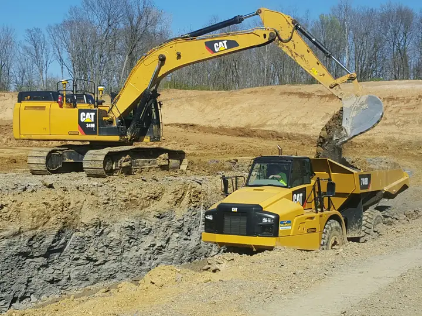
Since 2002Headquartered in Glenarm, Illinois
3 to 40+Pieces of heavy equipment, then and now
½ inchGPS grading tolerance on dozers and graders
ZeroLost-time accidents since going into business
What we build
For landfill owners, power plants, coal mines, commercial development groups, and farm and grain companies.
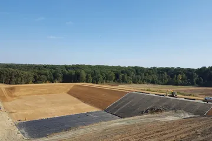
Landfills
Cell construction, liners and final cover
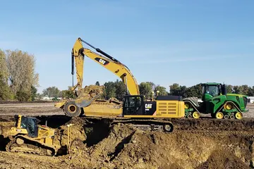
Site development
Land improvement and facility sitework
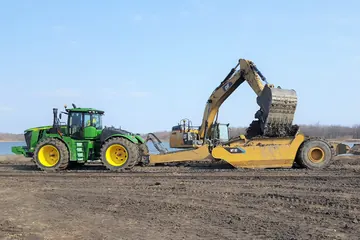
Mining
Box cuts, impoundments, overburden
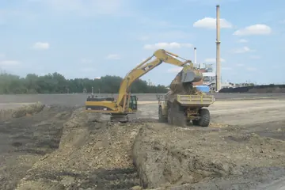
Power plant services
Substations, fly ash landfills and ponds
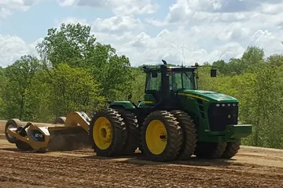
Railway construction
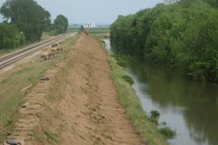
Water resources
Levees, ponds, reservoirs, wetlands
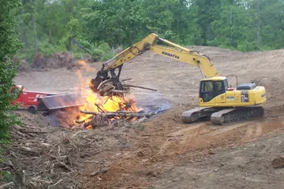
Specialty services
Slurry walls, land and right-of-way clearing
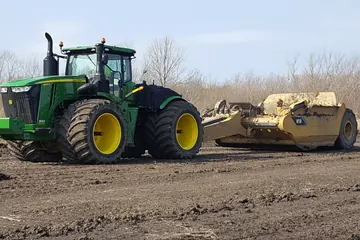
Agricultural services
Grain, fertilizer and ethanol plant sitework
Three machines in 2002. Over 40 today.
In 2002Over 40 today
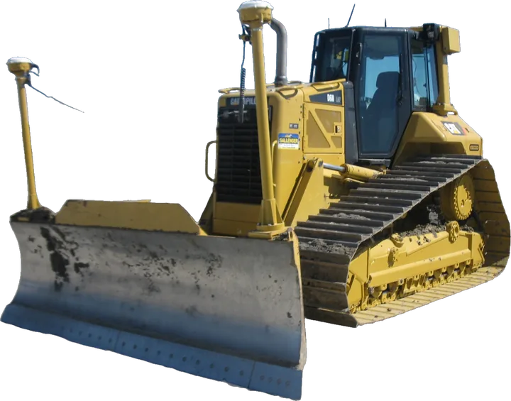
One of the most current-model heavy equipment fleets in Central Illinois, with Tier 3 and Tier 4 Final designations. The work runs on Caterpillar and John Deere equipment.
- Trimble GPS with Earthworks automatic hydraulics on the bulldozers and graders: high-speed grading to a ½-inch tolerance.
- GPS on scrapers and excavators, so lined ponds, basins and impoundments get cleaned out without damaging the HDPE liner.
- AutoCAD drawings turned into 3D terrain models to keep the project on schedule, even when the design changes.
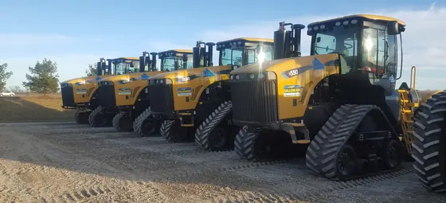
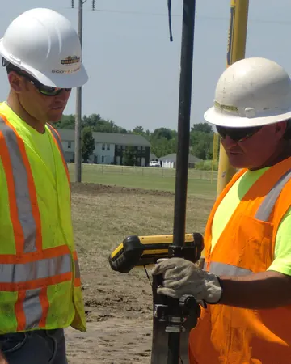
Zero lost-time accidents since 2002.
- Experience Mod Rate of .83 on workers comp.
- Project managers are OSHA 30-hour trained, superintendents OSHA 10-hour, and both take the annual MSHA 8-hour refresher.
- Operators are task-trained on every piece of equipment before they are authorized to run it.
“Since our company bears our family name, our work is very personal to us.”From the Sallenger home page
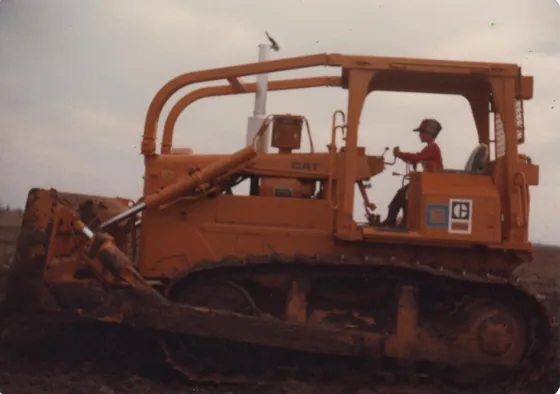
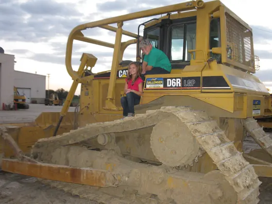